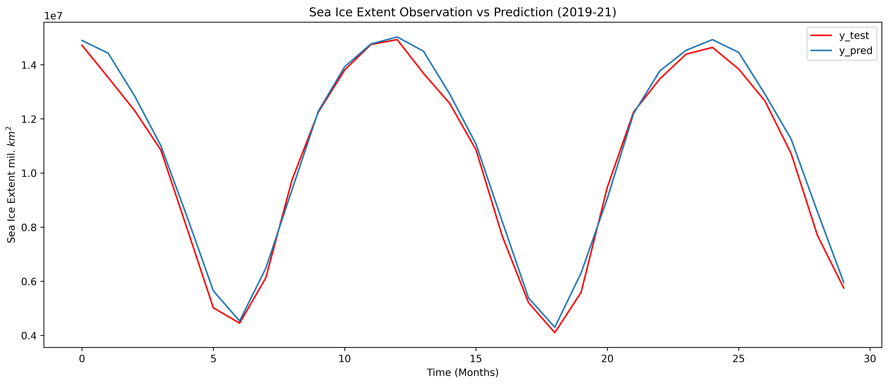

Initial Setup
Contents
Initial Setup#
import numpy as np
import pandas as pd
from sklearn import datasets, preprocessing
from sklearn.model_selection import train_test_split
import pandas_profiling
from matplotlib import pyplot as plt
import sklearn.gaussian_process as gp
from sklearn.metrics import r2_score
from sklearn.preprocessing import MinMaxScaler, StandardScaler
from sklearn.linear_model import LinearRegression
#from sklearn.gaussian_process import GaussianProcessRegressor
#from sklearn.gaussian_process.kernels import RBF, ConstantKernel as C
Loading the Dataset#
df = pd.read_csv("/content/Arctic_domain_mean_monthly_1979_2021.csv")
# remove date from the set
df = df.drop('Date', 1)
df.loc[:, 'sea_ice_extent_2'] = df['sea_ice_extent']
df.head()
<ipython-input-2-a806c5377ae6>:3: FutureWarning: In a future version of pandas all arguments of DataFrame.drop except for the argument 'labels' will be keyword-only
df = df.drop('Date', 1)
| wind_10m | specific_humidity | LW_down | SW_down | rainfall | snowfall | sst | t2m | surface_pressure | sea_ice_extent | sea_ice_extent_2 | |
|---|---|---|---|---|---|---|---|---|---|---|---|
| 0 | 5.531398 | 0.811961 | 186.687054 | 3.127880 | 1.009872 | 0.892319 | 273.355237 | 250.388101 | 984.633032 | 15604191 | 15604191 |
| 1 | 5.328020 | 0.688896 | 174.794571 | 18.541594 | 0.920831 | 0.781347 | 273.121885 | 247.071202 | 983.980418 | 16378929 | 16378929 |
| 2 | 5.432511 | 0.916124 | 190.741933 | 67.690429 | 0.983327 | 0.855266 | 273.088099 | 252.954138 | 985.140468 | 16521089 | 16521089 |
| 3 | 4.792836 | 1.272056 | 212.937925 | 156.223673 | 0.890723 | 0.705203 | 273.126062 | 259.557456 | 989.314698 | 15561238 | 15561238 |
| 4 | 4.819028 | 2.239776 | 253.690478 | 230.950833 | 1.201308 | 0.688723 | 273.393551 | 269.375118 | 984.483658 | 14085613 | 14085613 |
#Creating datasets with lag of 1 month
df1 = df.assign(sea_ice_extent_2 = df.sea_ice_extent_2.shift(-1)).drop(df.index[-1])
df1.head
<bound method NDFrame.head of wind_10m specific_humidity LW_down SW_down rainfall snowfall \
0 5.531398 0.811961 186.687054 3.127880 1.009872 0.892319
1 5.328020 0.688896 174.794571 18.541594 0.920831 0.781347
2 5.432511 0.916124 190.741933 67.690429 0.983327 0.855266
3 4.792836 1.272056 212.937925 156.223673 0.890723 0.705203
4 4.819028 2.239776 253.690478 230.950833 1.201308 0.688723
.. ... ... ... ... ... ...
506 5.494218 1.006108 194.683072 68.315949 1.135685 0.919100
507 5.383687 1.529497 225.171796 156.567743 1.159049 0.929777
508 4.777020 2.451088 260.956781 229.604138 1.077705 0.575494
509 4.771453 4.176458 294.931709 244.702852 1.585094 0.360146
510 4.754014 5.193846 313.311345 196.774631 1.957911 0.248088
sst t2m surface_pressure sea_ice_extent \
0 273.355237 250.388101 984.633032 15604191
1 273.121885 247.071202 983.980418 16378929
2 273.088099 252.954138 985.140468 16521089
3 273.126062 259.557456 989.314698 15561238
4 273.393551 269.375118 984.483658 14085613
.. ... ... ... ...
506 273.414735 254.391240 977.764826 14640000
507 273.470298 263.146395 985.801841 13840000
508 273.888627 271.557464 985.606182 12660000
509 275.245088 278.360921 978.436682 10710000
510 277.253314 280.413695 978.293303 7690000
sea_ice_extent_2
0 16378929.0
1 16521089.0
2 15561238.0
3 14085613.0
4 12653185.0
.. ...
506 13840000.0
507 12660000.0
508 10710000.0
509 7690000.0
510 5750000.0
[511 rows x 11 columns]>
Train Test Split#
data = np.array(df1)
target = data[:,-1] #assign last column to be target variable
data = data[:,:-1] #dropping last column from features
# print(data.shape)
# print(target.shape)
LEN_DATA = len(data) #total number of pixels
NUM_TRAIN = LEN_DATA - (24+6) #reserve last 30 months for testing
x_train = data[0:NUM_TRAIN]
y_train = target[0:NUM_TRAIN]
x_test = data[NUM_TRAIN:]
y_test=target[NUM_TRAIN:]
print(x_train.shape)
print(y_train.shape)
print(x_test.shape)
print(y_test.shape)
(481, 10)
(481,)
(30, 10)
(30,)
Data Normalization#
from sklearn.preprocessing import MinMaxScaler, StandardScaler
scaler_x = MinMaxScaler()
x_train = scaler_x.fit_transform(x_train)
x_test = scaler_x.transform(x_test)
scaler_y = MinMaxScaler()
y_train = scaler_y.fit_transform(y_train.reshape(-1,1))
y_test = scaler_y.transform(y_test.reshape(-1,1))
Defining Model#
model = LinearRegression()
model.fit(x_train, y_train)
LinearRegression()In a Jupyter environment, please rerun this cell to show the HTML representation or trust the notebook.
On GitHub, the HTML representation is unable to render, please try loading this page with nbviewer.org.
LinearRegression()
Model Predictions#
y_pred = model.predict(x_test)
y_train_pred = model.predict(x_train)
#Sample code to inverse transform data
#Inverse transformation should be performed after getting predictions
inv_y_train = scaler_y.inverse_transform(y_train)
inv_y_test = scaler_y.inverse_transform(y_test)
inv_y_pred = scaler_y.inverse_transform(y_pred)
Plotting Results#
%matplotlib inline
#plot
fig, ax= plt.subplots(figsize=(15, 6), dpi = 600)
plt.plot(inv_y_test, color='red')
plt.plot(inv_y_pred)
plt.legend(['y_test','y_pred'])
plt.title("Sea Ice Extent Observation vs Prediction (2019-21)")
ax.set_xlabel("Time (Months)")
ax.set_ylabel(r"Sea Ice Extent mil. $km^2$")
plt.show()
fig.savefig('Time_series_sea_ice_extent_trend_1979_2021_lag1.png')

Performance Evaluation#
rmse1 = np.sqrt(np.mean((inv_y_pred - inv_y_test) ** 2))
print('Test RMSE: %0.2f Mil. sq Km' %(rmse1))
Test RMSE: 433143.27 Mil. sq Km
nrmse1 = rmse1/(np.mean(inv_y_test))
nrmse1
0.04124839984143858
r2 = r2_score(inv_y_test, inv_y_pred)
print('R2 Score: %0.2f' %(r2))
R2 Score: 0.99